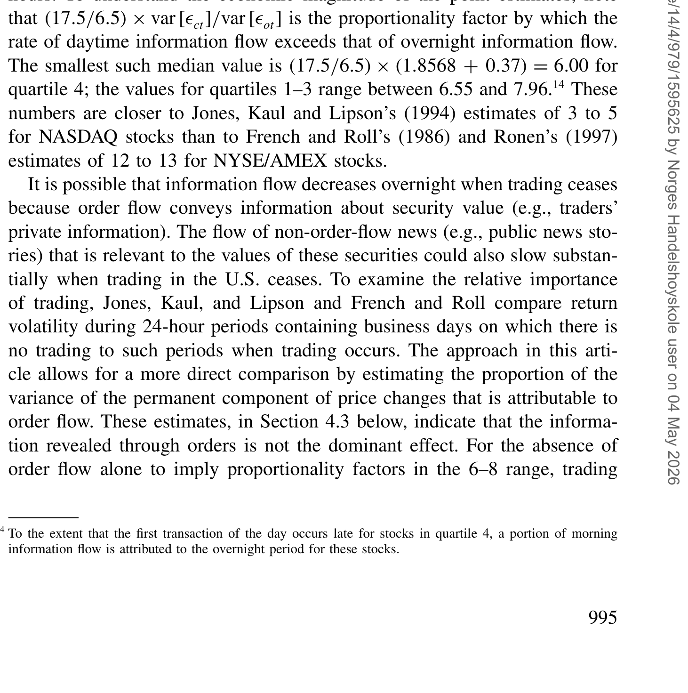
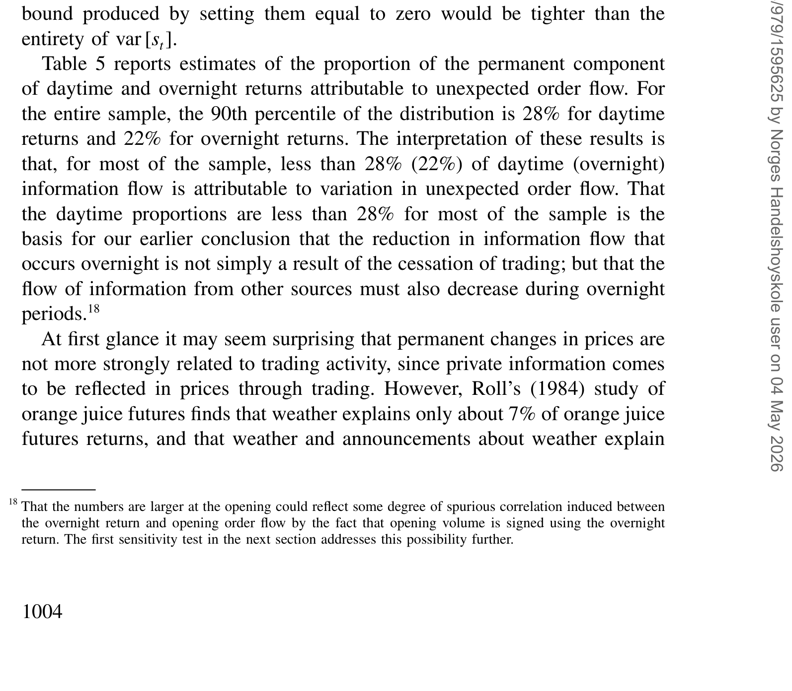
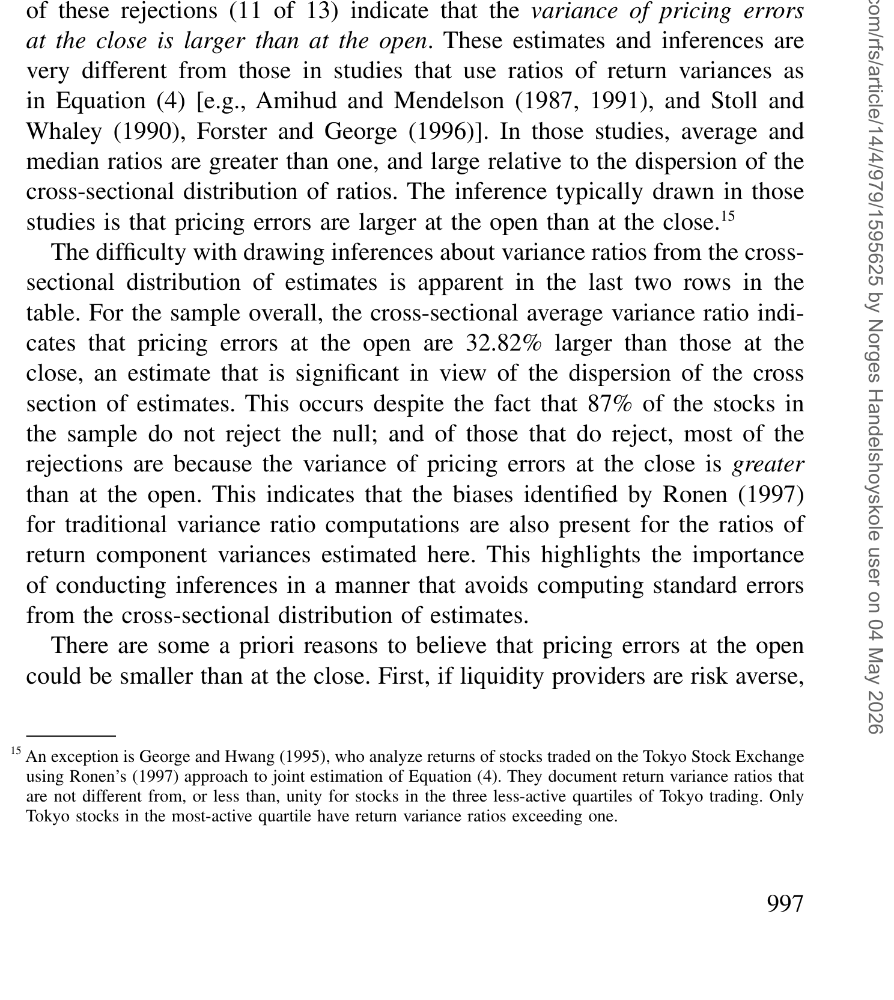
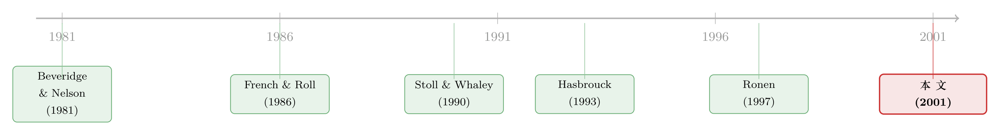

白天的价格在「想事情」，晚上它只是在打盹
本文读的是 George & Hwang (2001, Review of Financial Studies)：他们用一套能同时容纳「异方差」和「信息与定价误差相关」的时间序列方法，在单只股票层面重新估计了价格里的永久成分（信息）与暂时成分（定价误差）。结论是——白天的信息流速率约为夜间的 7 倍，但开盘与收盘的定价误差大小并没有显著差别。后一条，恰好和过去用「方差比」做出来的主流结论相反。
1 一个被问了二十年、却一直没问干净的问题
先想象一只在纽约证券交易所挂牌的股票。它每天的生命被切成两段：白天，交易在进行；晚上，市场闭门谢客。
于是有两个很自然的问题：
第一，信息是不是只在白天才流进价格？毕竟夜里没人交易，那价值发现是不是也跟着停摆了？
第二，开盘那一刻和收盘那一刻，价格的「准不准」是不是不一样？开盘前隔了一整夜没交易，又用着和盘中不同的撮合机制，直觉上开盘价应该更「毛糙」一些。
这两个问题，市场微观结构这一行的人追了二十年。而且早就有了一个看起来很干净的答案：开盘的定价误差比收盘更大，信息流白天远快于夜间。做法也很统一——算收益率方差比 (return variance ratio)。French and Roll (1986) 比较交易日与非交易日的收益方差，Amihud and Mendelson (1987)、Stoll and Whaley (1990) 比较开盘到开盘、收盘到收盘的 24 小时收益方差。比率大于 1，就说开盘更乱。
这套逻辑流行到几乎成了常识。可本文作者偏要回头追问一句：这个比率，量的真是我们想量的东西吗？
这正是全文的张力所在：一个被广泛接受的实证结论，可能从它所依赖的统计量那一步起，就已经「不干净」了。
2 老办法为什么会「说不清」
要看清问题，得先把价格拆开。微观结构里有个被反复使用的设定：交易价格 \(p_t\) 由两块构成——一块是永久成分 (permanent component)，对应信息，写作随机游走 \(m_t\)；另一块是暂时成分 (transitory component)，对应市场摩擦（做市成本、库存、买卖价差弹跳），它迟早会消失，被称作定价误差 (pricing error) \(s_t\)：
$$p_t = m_t + s_t$$ $$m_t = m_{t-1} + \theta_t$$
这里 \(\theta_t\) 是永久价格变动（信息冲击），\(s_t\) 是会回归的那一部分。信息流的快慢，就对应 \(\theta_t\) 的方差；定价误差的大小，就对应 \(s_t\) 的方差。
把白天和夜间分开，就得到 George & Hwang 沿用的异方差版设定。\(ot\)、\(ct\) 分别表示第 \(t\) 天的开盘与收盘：
$$p_{ct} = m_{ct} + s_{ct}$$ $$m_{ct} = m_{ot} + \theta_{ct}$$ $$p_{ot} = m_{ot} + s_{ot}$$ $$m_{ot} = m_{c,t-1} + \theta_{ot}$$
于是「白天信息是否更多」就变成比较 \(\mathrm{var}[\theta_{ct}]\) 与 \(\mathrm{var}[\theta_{ot}]\)，「开盘是否更乱」就变成比较 \(\mathrm{var}[s_{ot}]\) 与 \(\mathrm{var}[s_{ct}]\)。问题被翻译得清清楚楚。
接着，一个自然的问题是：那 French-Roll 的方差比到底在量什么？把它按上面的拆解展开，分子分母长这样：
看出问题了吗？我们想要的只是第一项 \(\mathrm{var}[\theta_{ct}]\)，可方差比里还塞着定价误差的方差（\(a2\)），以及——信息与定价误差之间的协方差（\(a3\)）。
Jones, Kaul, and Lipson (1994) 早就注意到中间那项 \(a2\) 会把比率往 1 拉偏。但本文点出了更要命的一点：\(a3\) 这个协方差根本就不该假设为零。为什么？因为在一个存在信息不对称、做市又有成本的市场里，订单的到达同时干两件事：它一边把私有信息带进价格（推动 \(\theta\)），一边又让成交价在买价和卖价之间弹跳（制造 \(s\)）。同一个订单流 \(v_t\) 既进了永久成分，又进了暂时成分——两者天生相关。
于是 \(a3\) 不为零，方差比的偏误方向变得不确定：它既不是干净地量信息，也不是干净地量定价误差，而是三者纠缠的一团。过去那个「开盘更乱」的结论，就建立在这团纠缠之上。
（关于「公开信息只在闭市时降临、价格如何消化」的另一种视角，可参见《把股票拆成一支球队：当『公开信息』只在闭市时降临》。）
3 真正关键的一步：把两个成分「解耦」
那有没有办法绕开这团纠缠？有。本文的方法骨架来自 Beveridge and Nelson (1981) 和 Watson (1986) 的趋势-周期分解，再经 Hasbrouck (1991b, 1993) 推广到向量时间序列。
这套分解的直觉很漂亮。永久成分 \(\theta_t\) 可以写成对一个无限远期价格预测的「修正量」：
$$\theta_t = \lim_{n\to\infty}\big\{(E_t[p_{t+n}] - p_{t-1}) - (E_{t-1}[p_{t+n}] - p_{t-1})\big\}$$
也就是说，\(t-1\) 到 \(t\) 之间到达的信息，最终会把价格永久地推到哪儿，这个「最终」的冲击就是 \(\theta_t\)。而定价误差 \(s_t\) 则是价格当前相对其「无摩擦水平」的偏离——它是对价格将来会怎样回归的预测：
$$-s_t = \lim_{n\to\infty}\big\{E_t[p_{t+n}] - p_t\big\}$$
关键在于：这两个条件期望，都可以从价格（及订单流）一阶差分的向量移动平均表示里算出来。换句话说，\(\mathrm{var}[\theta]\) 和 \(\mathrm{var}[s]\) 可以直接用时间序列模型的参数表达出来——不需要先假设两者不相关。这正是 Beveridge-Nelson 技术相对方差比的根本优势：它天然就把永久与暂时成分隔开了，协方差那一项再也不会污染结论。
Hasbrouck (1993) 在这里提醒过一句很重要的话：既然我们要把信息和定价误差分开，那一切先验上会影响定价误差的变量，都得放进时间序列模型里——否则它们引起的变动会被「漏检」。而最该放进去的那个变量，就是订单流 (order flow)。所以本文的模型里，同时装着收益率和订单流两组变量。这一步还有个额外的红利：有了订单流，就能进一步回答「信息流里有多少是交易带来的」——这后面会成为全文最反直觉的一击。
4 从结构模型到一个能估的 VAR
本文先用一个简单的结构模型说明这套设定从哪儿来：
$$p_t = m_t + \kappa_1 v_t + \kappa_2 v_{t-1}$$ $$m_t = m_{t-1} + \kappa_3\big(v_t - E_{t-1}[v_t \mid \eta_t]\big) + \eta_t$$ $$v_t = \rho v_{t-1} + \gamma \eta_t + u_t$$
这里 \(p_t\) 是成交价对数，\(v_t\) 是 \(t\) 时刻成交的带符号订单。\(\kappa_1\) 反映买单要多付、卖单要少收（补偿做市的成本）；\(\kappa_2\) 反映库存变化导致做市商抬高或压低报价；\(\kappa_3\) 是当期成交里未预期部分所携带的信息冲击。\(\eta_t\) 是非交易类新闻，\(\gamma\) 衡量新闻引发的组合再平衡如何反过来影响订单流。把 \(\kappa\) 除以半个价差，这就是 George, Kaul, and Nimalendran (1991) 那一类价差分解：订单处理、库存、逆向选择三块。
这里藏着这个模型的全部精髓：\(s_t\) 和 \(\theta_t\) 之所以相关，是因为 \(v_t\) 同时出现在两者里。这不是技术瑕疵，这是市场的本来面目。
然后是关键的一步代数操作。对 \(p_t\) 取一阶差分、代入 \(m_t-m_{t-1}\)、再把订单流方程代入，整理之后，这个结构模型可以被改写成一个二阶向量自回归（只是有些系数恰好为零）。更一般地，把收益与订单流堆成向量 \(x_t \equiv (r_{dt}, r_{nt}, v_{dt}, v_{nt})'\)，其中 \(r_{nt}\equiv p_{ot}-p_{c,t-1}\) 是隔夜收益、\(r_{dt}\equiv p_{ct}-p_{ot}\) 是白天收益，就得到一个 \(p\) 阶 VAR：
$$A x_t = B_1 x_{t-1} + \cdots + B_p x_{t-p} + u_t, \quad u_t \sim \text{i.i.d.}\,(0,\Sigma)$$
再用标准技巧把它堆叠成一个 VAR(1)：
$$A_* x_{*t} = B_* x_{*t-1} + u_{*t}, \quad u_{*t}\sim\text{i.i.d.}\,(0,\Sigma_*)$$
本文的 Theorem 1 证明：只要 \(A_*\) 可逆、且 \(A_*^{-1}B_*\) 的特征根都在单位圆内，那么 \(\mathrm{var}[\theta_{ot}]\)、\(\mathrm{var}[\theta_{ct}]\)、\(\mathrm{var}[s_{ot}]\)、\(\mathrm{var}[s_{ct}]\) 都能写成 VAR 参数 \(A_*,B_*,\Sigma_*\) 的闭式表达。也就是说，只要估出这个 VAR，四个我们真正关心的方差就全部到手——而且开盘信息流方差 \(\mathrm{var}[\theta_{ot}]\) 的表达式干净到只剩订单流分块那一项，正是把白天与夜间的撮合差异分离开来的结果。
5 识别：把检验做在「每一只股票」上
光有估计还不够。本文还要回应 Ronen (1997) 的一记重拳。
Ronen 指出：过去的研究几乎都是把方差比在横截面上取平均，再用横截面分布算标准误。这暗含一个强假设——各只股票的估计是来自同一分布的独立抽样。可现实是，这些估计来自同一段共同时期的股价数据，既不独立、分布也未必相同。Ronen 用 Hansen (1982) 的广义矩估计 (generalized method of moments, GMM) 重做，发现一旦不靠横截面分布做推断，结论就变了：她无法拒绝式 (5) 那一组比率等于 1（即开盘收盘没差别）。
本文接受了这个教训，索性走得更彻底：对每一只股票单独用 GMM 估参数，从而拿到每只股票自己的（渐近）抽样误差结构，把假设检验直接做在单只证券层面。作为对照，他们也报告了横截面分布的版本——结果正如 Ronen 所言，是有偏的。
这一节其实是全文「统一」二字的来历：估计（Beveridge-Nelson 解耦）与检验（单股票 GMM）被装进了同一个框架，既不靠「两成分不相关」的假设，也不靠「横截面同分布」的假设。
6 数据
样本是 100 只纽约证券交易所挂牌的股票。观测的基本单位是「天」，但每天被拆成两段：隔夜收益 \(r_{nt}\) 与白天收益 \(r_{dt}\)；订单流也对应拆成开盘订单流 \(v_{nt}\) 与盘中订单流 \(v_{dt}\)（开盘那一笔单独处理，因为开盘价与开盘订单流是联合决定的）。订单的买卖方向按 Lee and Ready (1991) 的规则来标。模型估计的是包含这四个变量的低阶 VAR。
7 主要结果：白天在「想事情」，定价误差却没那么偏心
结果一：信息流，白天确实远快于夜间。 对样本里大多数股票，白天与夜间的信息流速率显著不同，中位数上白天约为夜间的 7 倍。这一条和直觉、也和过去的文献一致。

Table 2: reports the analysis of rates of information flow. The first row of from
结果二，也是最反直觉的一击：这「7 倍」里，交易本身的贡献并不大。 对样本里大多数股票，白天信息流中与订单流相关的部分不足 28%。这个数字太小了——它意味着「夜里停止交易」并不是夜间价值发现放慢的主要原因。真正的原因是：夜里其他信息来源（非交易类新闻）也几乎枯竭了。换句话说，价格夜里打盹，不是因为没人下单，而是因为根本没什么新消息进来。

Table 5: reports estimates of the proportion of the permanent component
（这恰好与「几乎没人交易的盘后时段，价格却没有闲着」的发现相互印证，参见《几乎没人交易的那几个小时，价格却没有闲着》。）
结果三：开盘并不比收盘更「乱」。 这是与旧结论正面相撞的地方。对大多数股票，开盘与收盘的定价误差方差没有显著差别。100 只股票里，只有 11 只拒绝「方差相等」而支持收盘方差更大，仅 2 只支持开盘方差更大。

Table 3: reports the results concerning pricing errors at the open and close
请记住第 1 节里那个流行结论——多数用方差比的研究都说「开盘的定价误差强烈地大于收盘」。而一旦把信息与定价误差的协方差从统计量里清理出去，这个结论就站不住了。当差异确实存在时，反而更多地是收盘的定价误差更大。
结果四：库存效应在收盘更明显。 估计还显示，库存效应在收盘扮演了更大的角色——很可能正是因为接下来要面对一整夜的停盘，做市商更在意手里的头寸。不过即便如此，对样本里多数股票，这点库存作用也还不足以让收盘的定价误差平均幅度超过开盘。
8 文献脉络
把这条线捋一捋，会看到一个很清晰的「方法论接力」。
最早，Beveridge and Nelson (1981) 和 Watson (1986) 在宏观时间序列里解决了一个一般问题：怎么把一个序列拆成永久（随机游走）与暂时成分。这本是「商业周期」的工具，和微观结构八竿子打不着。
接着，微观结构这边自己长出了一支：French and Roll (1986) 用收益方差比研究信息在交易与非交易期的流速，Stoll and Whaley (1990)、Amihud and Mendelson (1987) 用 24 小时收益方差比研究开盘与收盘的摩擦差异。这条路简单好用，却始终带着「两成分不相关」的隐患。
然后，真正的转折由 Hasbrouck (1991b, 1993) 完成：他把 Beveridge-Nelson 分解推广到向量时间序列，证明不需要一个完整的结构模型，也能把信息与摩擦的方差估出来，从而绕开设定误差。
但真正关键的一步，是把这套向量分解用到 day/night、open/close 的异方差问题上，并回应 Ronen (1997) 关于推断方式的批评——这正是 George & Hwang (2001) 站的位置。它把 Hasbrouck 的解耦、和单股票 GMM 的稳健推断，拼成了一个统一的估计-检验框架，然后用它把一个流行了二十年的实证结论翻了过来。

9 评论与延伸（Q&A + 研究方向）
(a) 几个可能的疑问
Q：这和直接估一个结构模型（比如 Madhavan-Richardson-Roomans）有什么区别？
区别在「要不要押注一个具体结构」。Madhavan, Richardson, and Roomans (1997) 把推断建在一个结构模型上，模型设错了，方差估计就跟着错。本文走的是 Hasbrouck 式的时间序列路线：只要价格能写成「随机游走 + 协方差平稳的暂时成分」，方差就能被识别，不依赖某个特定结构是否成立。
Q：方差比的偏误，不是早就有人知道吗？本文新在哪？
Jones, Kaul, and Lipson (1994)、Smith (1995) 知道定价误差会带来偏误，Stoll and Whaley (1990) 知道协方差会带来偏误。本文的新意不在「指出问题」，而在「提供一个不犯这个错的替代方案」，并把它落到单股票层面的可检验统计量上。指出毛病和给出干净的尺子，是两回事。
Q：「白天信息流是夜间 7 倍」难道不是显然的吗？白天当然交易多。
表面看是。但本文真正的贡献是把这个「7 倍」再拆一刀：其中与订单流相关的不足
28%。这就排除了「因为夜里不能交易所以信息进不来」这个最直白的解释，把矛头指向「夜里压根没有新消息」。同样是 7 倍，背后的机制完全不同。
Q：开盘和收盘没差别，会不会只是检验功效太低、没拒绝而已？
这是合理的担忧。但本文的方向性证据缓解了它：在确实拒绝的少数股票里，是收盘方差更大的占多数（
11对2），而不是均匀分布。如果只是噪声导致的不拒绝，不该出现这种系统性的偏向。
Q：为什么订单流这个变量这么关键，少了它会怎样？
因为本文方法是 Beveridge-Nelson 的推广，遗漏了相关变量，定价误差里的那部分变动就会被「漏检」。Hasbrouck (1993) 明确说订单流是最重要的此类变量。少了它，\(\mathrm{var}[s]\) 会被系统性低估，开盘/收盘的比较也就失真。
Q：这套方法只能用在 day/night、open/close 上吗？
不限于此。作者强调，只要你事先认为某些子时段（比如一周内、一日内的不同段落）之间，信息流或定价误差存在差异，这套估计-检验框架就能照搬过去。它是个通用的「分时段方差解耦器」。
(b) 几个可能的研究问题与提案
1. 把这套方法搬到公司债市场的「白天 vs 隔夜」
【经济故事】公司债是典型的场外、低频、交易商主导市场，隔夜信息流与定价误差的结构可能与股票截然不同——夜里没有报价更新，但宏观新闻照样到达。若能把 \(\mathrm{var}[\theta]\) 与 \(\mathrm{var}[s]\) 在债券上分时段估出来，可直接回答「债券价格的隔夜停摆，是信息枯竭还是流动性枯竭」。 【可行性】中。TRACE 提供逐笔成交与方向，但债券交易稀疏，VAR 估计需要在足够活跃的债券上做，样本会受限；可借鉴本文的单券 GMM 思路控制推断。
2. 外资持有比例与隔夜信息流速率
【经济故事】如果一只股票的边际投资者里有大量身处不同时区的外资，那么本地「夜间」恰是境外「白天」，信息流的昼夜差异应当被熨平。把 \(\mathrm{var}[\theta_{ot}]/\mathrm{var}[\theta_{ct}]\) 对外资可投资度做回归，能检验「信息的时区结构」。 【可行性】中高。可投资度（investability）数据成熟（参见《外资能买的股票，为什么更「抖」？》），跨国分时段成交数据是主要约束。
3. 收盘集合竞价改革前后的定价误差方差
【经济故事】许多交易所引入或改造了收盘集合竞价。本文方法能在改革前后分别估出 \(\mathrm{var}[s_{ct}]\)，从而直接度量「换一种撮合机制，收盘定价误差是大了还是小了」，比单看价差更贴近「价格准不准」。 【可行性】高。事件清晰、可做双重差分式比较；可与《收盘价到底准不准？》的结论相互对照。
4. 把「信息流中订单相关比例」做成横截面定价变量
【经济故事】本文算出的「白天信息流里与订单流相关的比例」其实是一个刻画逆向选择强度的干净指标。它能否预测横截面收益或价差，是个开放问题。 【可行性】中。指标构造依赖逐股 VAR，计算量大但可行；识别上要小心它与已知流动性指标的共线性。
10 我的判断
本文最漂亮的地方，是它把一个方法论的洁癖变成了一个实质性的反转。过去「开盘更乱」几乎是教科书式的共识，而它指出：这个共识依赖一个被悄悄假设掉的零协方差，一旦用 Beveridge-Nelson 把信息与定价误差真正解耦，再用单股票 GMM 做稳健推断，结论就改写成了「开盘和收盘其实差不多，若有差别反而是收盘更乱」。把估计与检验统一进同一框架、把推断下放到个股层面，这两点至今仍是值得学习的做法。
对识别的担忧也有几处。其一，整套方法押在「价格 = 随机游走 + 协方差平稳暂时成分」以及 VAR 可逆这些时间序列假设上，若真实过程有结构性断点或长记忆，闭式表达就会失真。其二，订单流的符号靠 Lee-Ready 规则推断，存在测量误差，而这个误差恰好落在最关键的那个变量上。其三，样本只有 100 只 NYSE 股票，且是 2001 年的市场结构——在今天高频、碎片化、闭市后仍有大量电子交易的市场里，「白天 vs 夜间」的二分本身是否还成立，值得重估。
我最想看到的后续，是把这套「方差解耦器」搬到信用市场与外资持有人的场景里去：在那里，昼夜的信息结构、交易商的库存动机、以及边际投资者的时区分布，都和 2001 年的 NYSE 大不相同——而这套方法恰恰是为「分时段、可能相关、需要逐个体检验」这种问题量身定做的。
参考文献
Amihud, Y., and H. Mendelson (1987). Trading Mechanisms and Stock Returns: An Empirical Investigation. Journal of Finance 42, 533–553.
Beveridge, S., and C. Nelson (1981). A New Approach to Decomposition of Economic Time Series into Permanent and Transitory Components with Particular Attention to Measurement of the 'Business Cycle'. Journal of Monetary Economics 7, 151–174.
French, K., and R. Roll (1986). Stock Return Variances, the Arrival of Information and the Reaction of Traders. Journal of Financial Economics 17, 5–26.
George, T. J., and C.-Y. Hwang (2001). Information Flow and Pricing Errors: A Unified Approach to Estimation and Testing. Review of Financial Studies 14(4), 979–1020.
George, T., G. Kaul, and M. Nimalendran (1991). Estimation of the Bid-Ask Spread and its Components: A New Approach. Review of Financial Studies 4, 623–656.
Hansen, L. (1982). Large Sample Properties of Generalized Method of Moments Estimators. Econometrica 50, 1029–1054.
Hasbrouck, J. (1991b). The Summary Informativeness of Stock Trades: An Econometric Analysis. Review of Financial Studies 4, 571–595.
Hasbrouck, J. (1993). Assessing the Quality of a Security Market: A New Approach to Transaction-Cost Measurement. Review of Financial Studies 6, 191–212.
Jones, C., G. Kaul, and M. Lipson (1994). Information, Trading and Volatility. Journal of Financial Economics 36, 127–154.
Lee, C., and M. Ready (1991). Inferring Trade Direction from Intraday Data. Journal of Finance 46, 733–746.
Madhavan, A., M. Richardson, and M. Roomans (1997). Why Do Security Prices Change? A Transaction-Level Analysis of NYSE Stocks. Review of Financial Studies 10, 1035–1064.
Ronen, T. (1997). Tests and Properties of Variance Ratios in Microstructure Studies. Journal of Financial and Quantitative Analysis 32, 183–204.
Stoll, H., and R. Whaley (1990). Stock Market Structure and Volatility. Review of Financial Studies 3, 37–71.
Watson, M. (1986). Univariate Detrending Methods with Stochastic Trends. Journal of Monetary Economics 18, 49–75.